In September 2018 Ben sat down in Indianapolis with his grandmother, Delores Grantham Torrence, and a recorder, and let it run for an hour and a half. Most of what follows is hers.
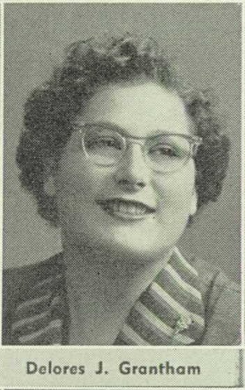
Logansport, 1937“A little dinky house”
I was born in Logansport, Indiana, Cass county in 1937, at home. Had a little home on my street in Logansport, a little dinky house.
Delores Grantham Torrence, 2018
She was the oldest of three. Her father, George Wilson Grantham, was fifty-two when she was born.
My dad was 30 years older than my mother… He was a preacher. And he was preaching at the Hopewell Methodist Church at Michigan Town, it’s out in the country and that’s where my mother attended church and that’s how she met him.
George had been born in 1885 at Georgetown, near Delphi, and lost his father at eight. He was ordained in the Methodist Protestant church; in 1926 the Logansport paper ran a story on him and his nineteen-year-old daughter Hester, who had just been licensed to preach herself. He was divorced. When he married Dorothy Sheets of Clinton County in November 1936 — the license calls him “an attendant at the state hospital” and her “a practical nurse of Monticello” — her family more or less disowned her, and he gave up the pulpit for good. He worked nights on the railroad and the interurban and slept days. He had a temper and was tight with a dollar. “I had a grandfather more than a father,” Delores said. The house was full of music all the same: George on harmonica, Dorothy at the piano, his half-brother “Uncle Bill” Shuey on violin. And politics: “Strict Democrats. Fiery Democrats. Oh, yes.”
The Granthams were railroad men. George’s brothers all worked for the Pennsylvania, and in May 1949 brother Roy, a yard brakeman with forty-two years’ service, stepped off a caboose into the path of a backing switch engine near the Wabash depot. The yard conductor told the inquest he shouted, “Look out, Roy, look out.”
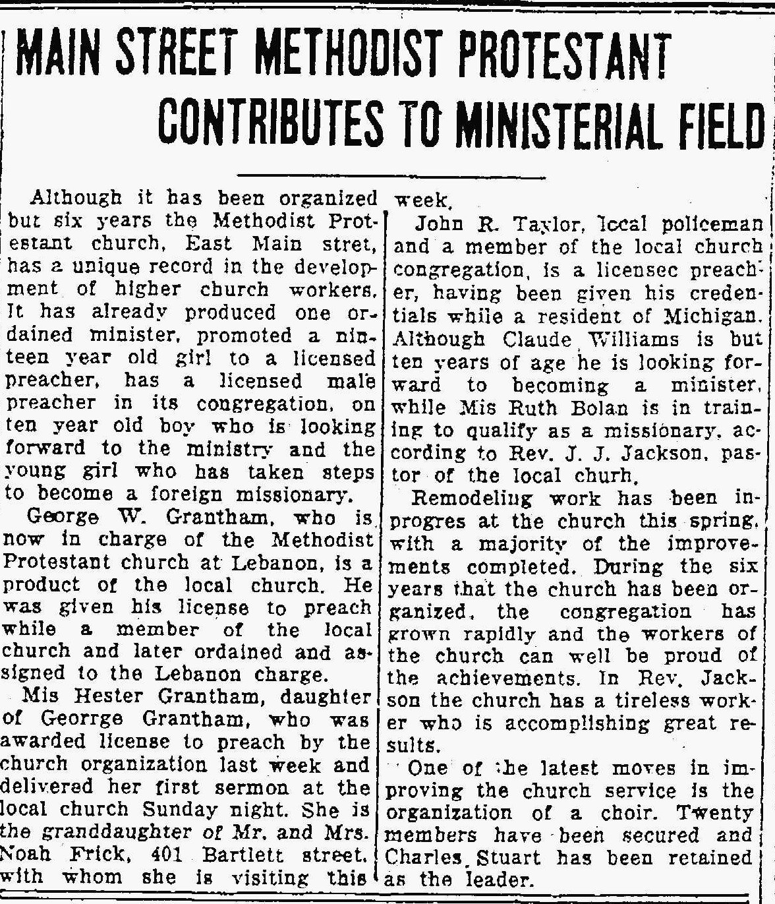
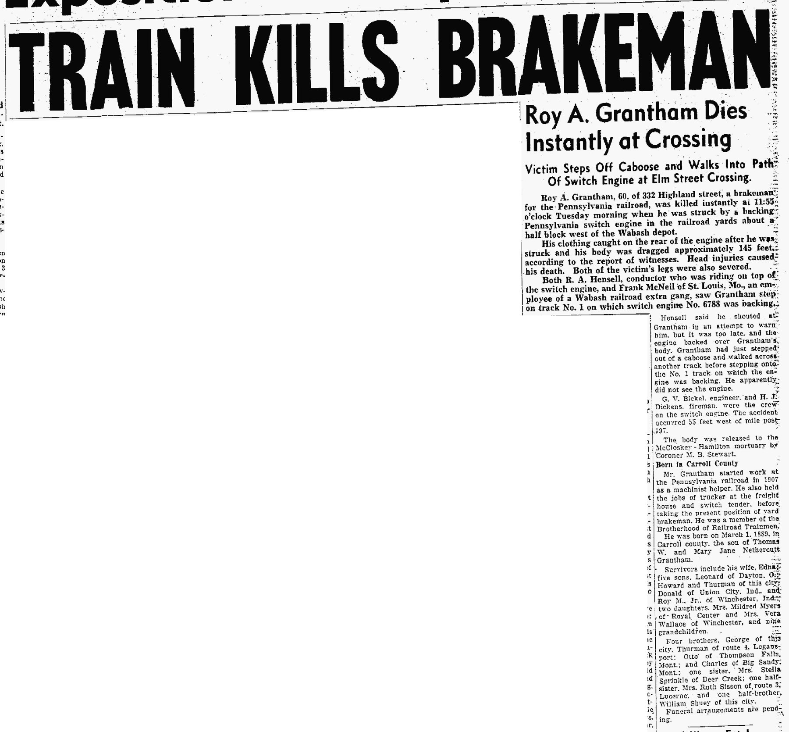
The farm on the hill
For a few years the family lived on a farm outside Logansport — a two-story house “high on a hill,” no electricity, oil lamps, an outhouse, plow horses, and a well so deep “it was all you could do to pump the water out.” They made their own butter and cottage cheese, killed a chicken for Sunday dinner, and hunted raspberries, pawpaws and sponge mushrooms — “We’d get home and she’d wash us down with bleach water. To keep us from getting poison ivy.”
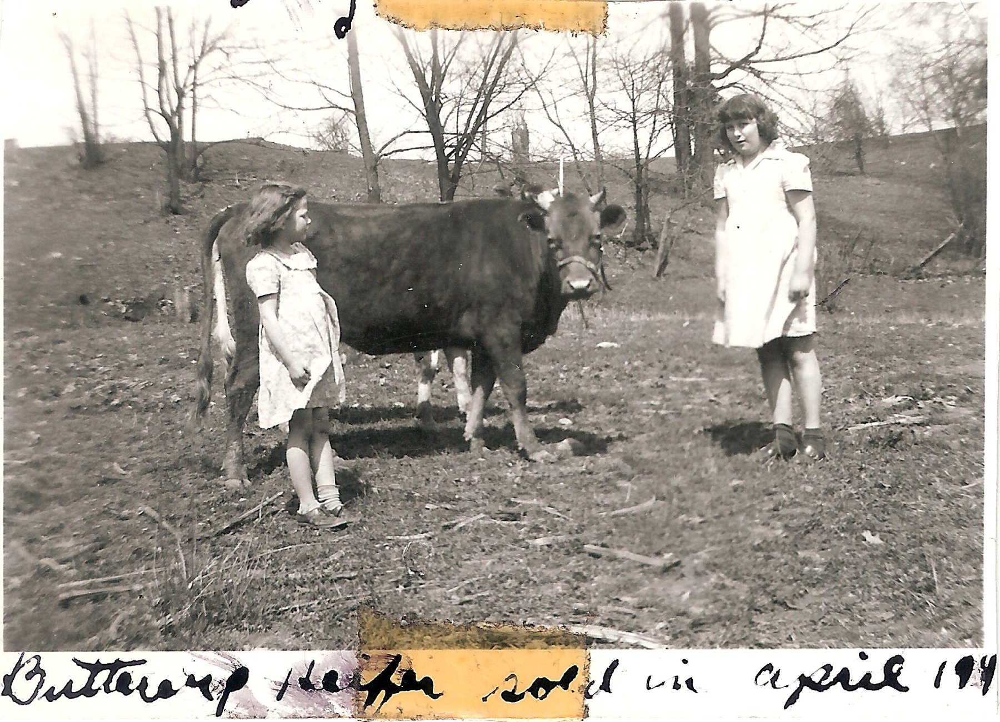
Well, I used to go out, we had a hollyhock bush and I’d go sit out there and make hollyhock dolls. I loved to do that. I had my little family of hollyhock dolls.
When George sold the farm and moved them to the east end of town, they got electric lights: “Yeah, we moved up in the world.” She remembered ration books, a measles quarantine sign on the door, the Cubs and The Shadow on the radio, and every Christmas Eve her Uncle Walt pulling up in a robin’s-egg-blue convertible to play Santa: “Rattle the bells or act like Santa Claus. And we’d lay awake waiting.”
Dorothy
She did very well in school and her dad wouldn’t let her go to college. She got a scholarship but he wouldn’t let her go. Back then, women didn’t have to have an education. … Mother always worked hard, took in ironings, did laundry, sewed… She was a good woman. I loved my mom.
Dorothy Sheets Grantham (1915–1975) was born at Beard, a hamlet in eastern Clinton County, a twin — her brother was Doyle — and lost her mother at about ten. She sewed uniforms for the Logansport high-school girls, and worked in the RBM and KLK factories. “Mother put in new archways in the house,” Delores said. “She just did everything. She could do everything. She had to ’cause Dad didn’t.”
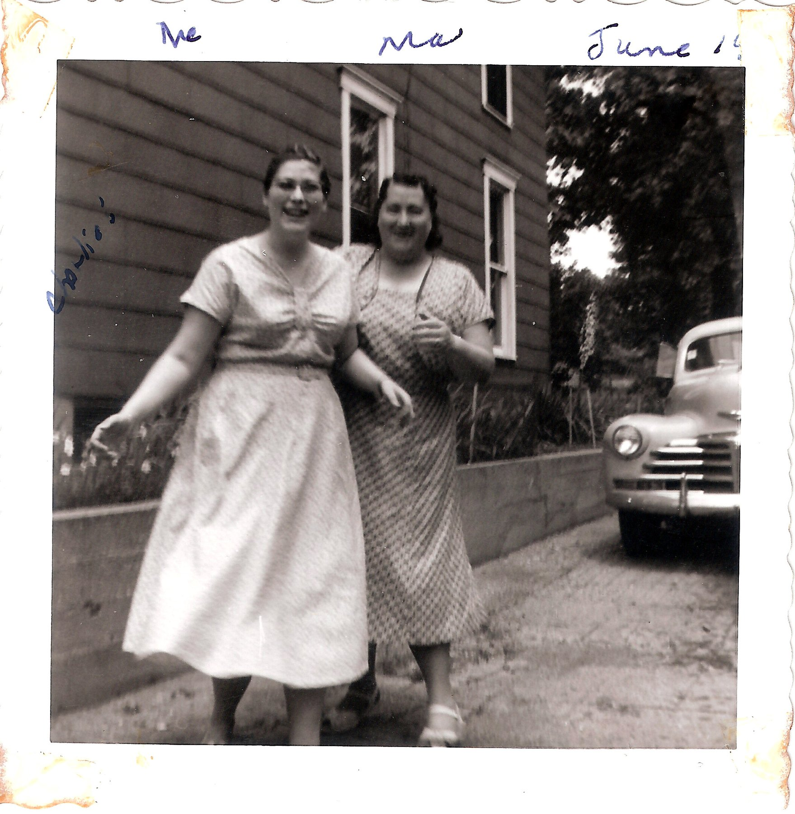
Clinton County, againThe Sheets and Crum families
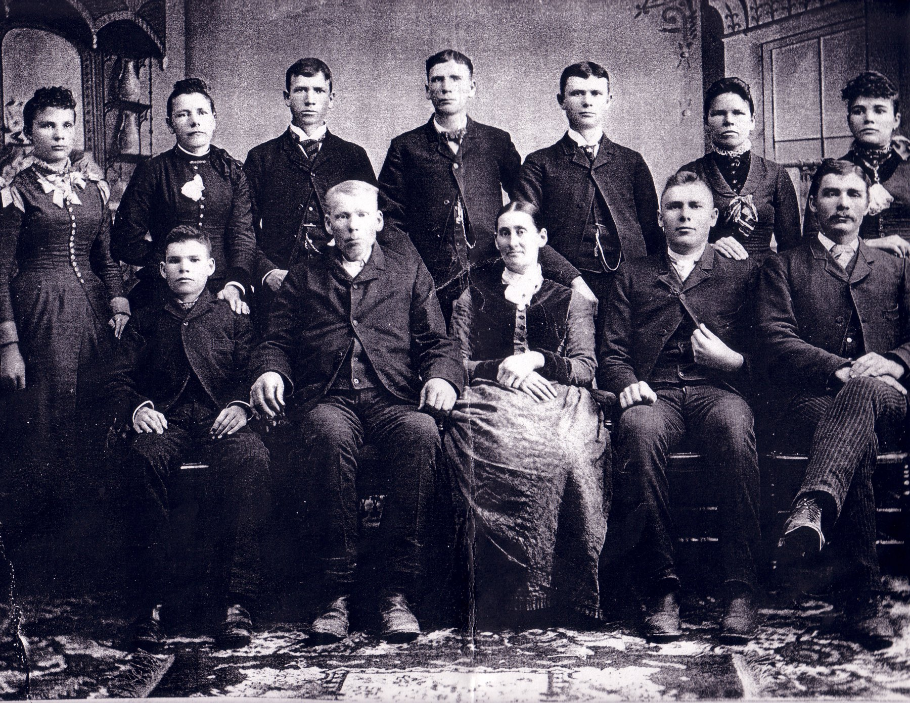
Through Dorothy, Mom’s side has roots in Clinton County nearly as deep as the Sloans’. Philip Sheets, born in Augusta County, Virginia in 1801 to Pennsylvania-German parents, came to Frankfort in September 1835 — the same month John Sloan’s first land patent was signed — and entered government land the next year. A shingle-maker and a Lutheran, he raised twelve children, and the 1886 county history says of him: “Mr. Sheets read the Bible through twenty-four times.”
William M. Crum (1833–1913), a Virginia carpenter who had worn Confederate gray, brought his wife Elizabeth Kropff and their children to Warren Township by way of Missouri in 1874. Four of his daughters sat for the 1930 portrait below — and three of them married Sheets brothers. One was Lucy Jane Crum, who married James Henry Sheets; their son Elby, who played in the Beard Band, was Dorothy’s father.
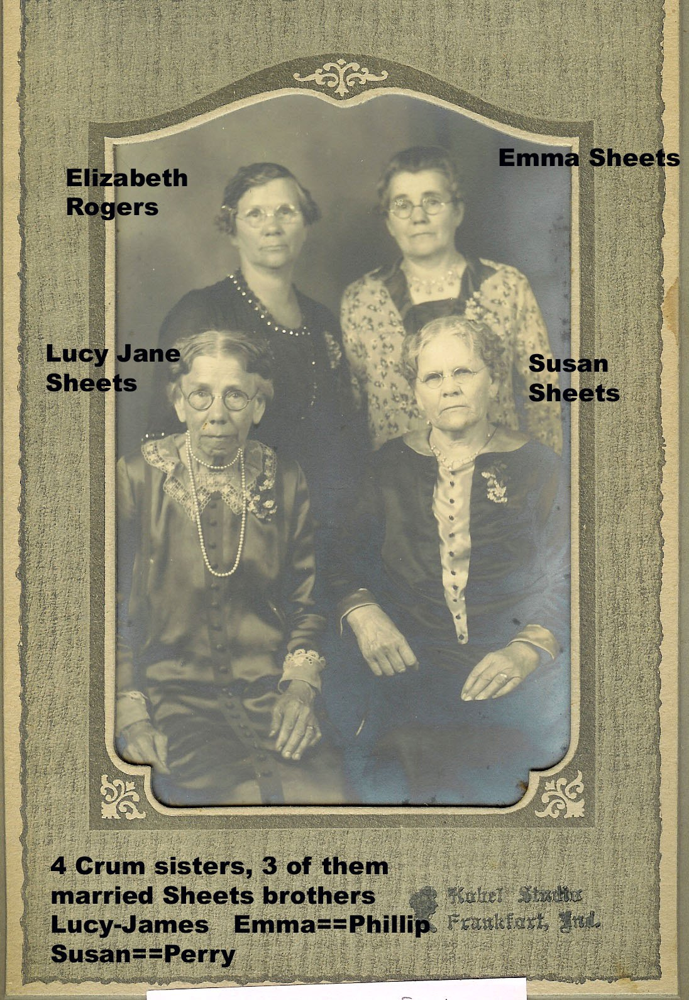
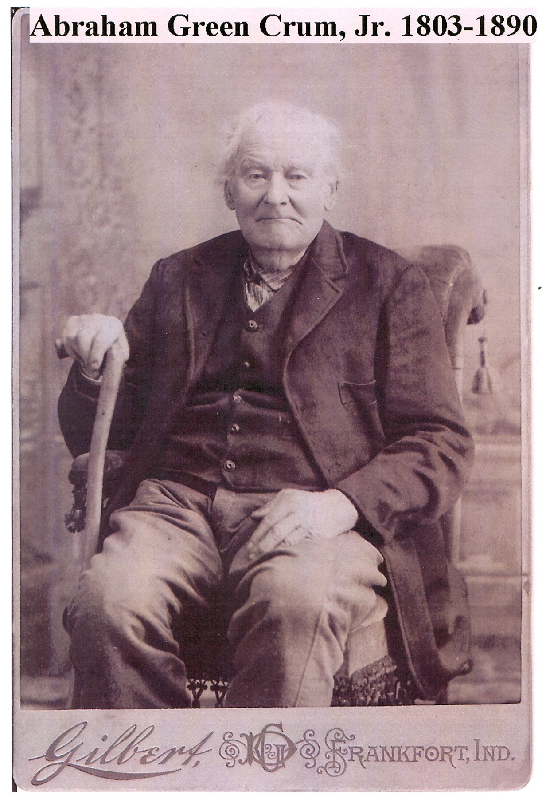
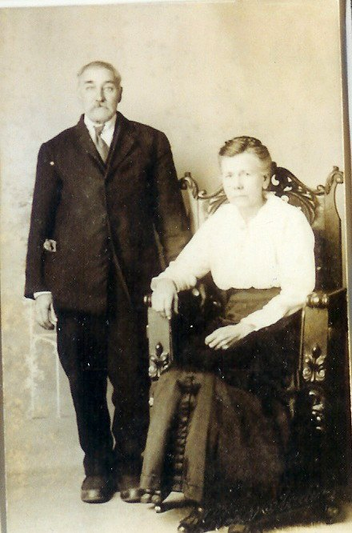
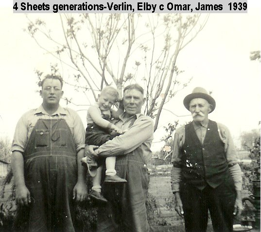
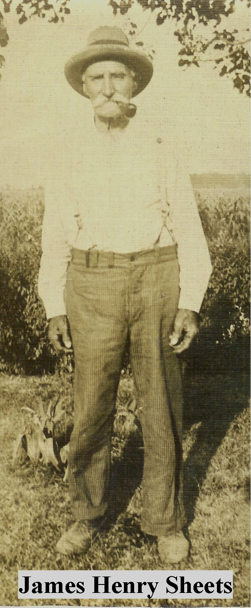
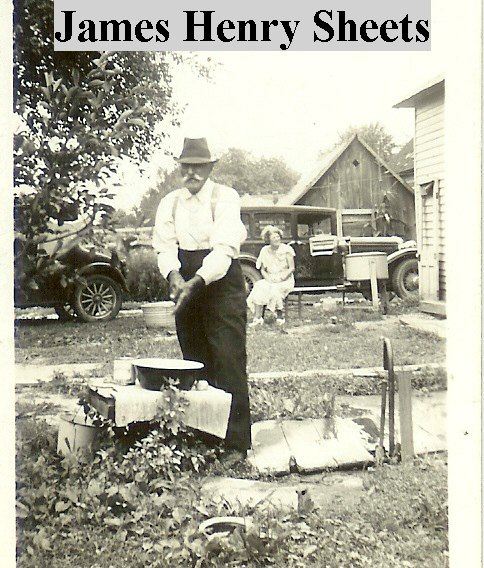
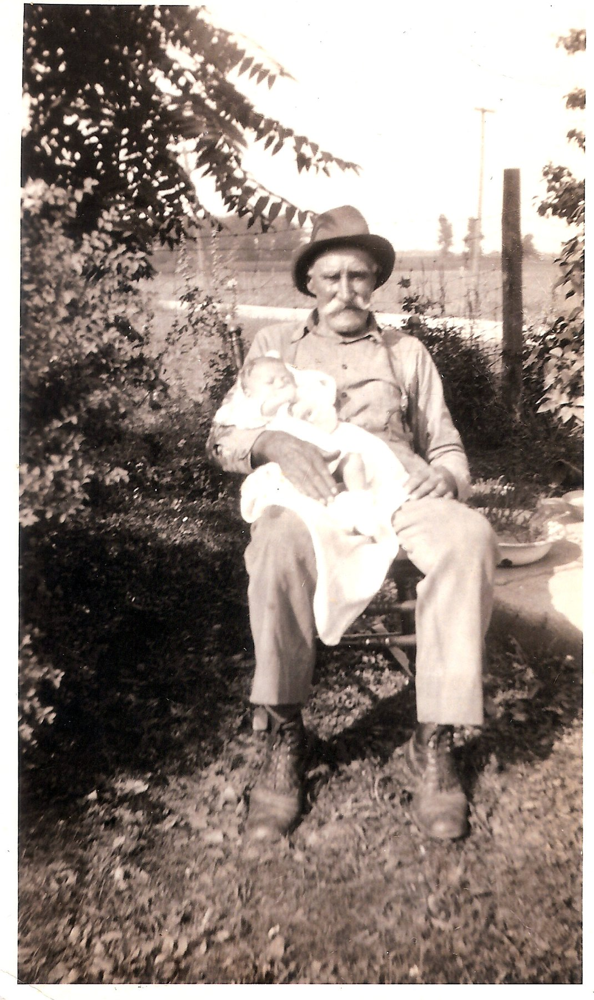
Older still
George Grantham’s mother was a Nethercutt, and her great-grandfather William Neithercutt (1762–1835) enlisted in the North Carolina Continental Line on 25 May 1781, fought at Eutaw Springs, the last big battle in the Carolinas, and later drew a pension of eight dollars a month in Franklin County, Indiana. His sworn declaration, made at fifty-eight, says he’d lost his discharge papers. The Carroll County history also lists a Second Lieutenant William M. Grantham of Company K, 128th Indiana, which marched with Sherman to Atlanta — though whether he is our William M. Grantham, whom the tree shows dying in 1863, is one of the loose ends.
Buncombe County, North CarolinaBuddy Torrence
Buddy John Torrence was born in August 1935 in the mountains around Asheville. His line runs back through Ralph Eury Torrence and William Garland Torrence to Hugh Torrance, born in 1732 to Scotch-Irish parents out of the north of Ireland, who settled in what is now Gaston County, North Carolina and made his will in 1803: a crown apiece to the daughters, the land to the sons. (So both of your parents descend from Ulster Presbyterians who landed in the Carolinas before the Revolution. They just took different roads to Cambria.)
Buddy came north as a young man to stay with his sister in Logansport and look for work, and found it as a cook at Longcliff, the state hospital — where Delores, fresh out of nursing school in South Bend, was working too. Her sister’s husband introduced them.
He always said he never asked me to marry him, that I was the one that… I don’t remember if he actually asked me, but I assumed, I guess.

He drove a truck most of his life — delivering RVs out of Elkhart as far as Long Island and Seattle, then hauling for the rendering plant in Frankfort, then a milk route. He played guitar and sang; there are recordings of him with Doris and Herb Gates of Cambria. The job brought the family to Frankfort, and about 1971 they bought the little house in Cambria.
Grandpa Bud and the liver and onions
Buddy himself, telling the story of the ice storm, the spilled liver and onions, and the race with his dog to get to it first.
His mom would not leave the mountains. She would not move across that mountain… But I loved those mountains too. And Bud loved those mountains. And now he’s buried up here in Indiana.
Buddy died on 21 May 1984, at forty-eight. Uly’s old Christmas Book, by then kept by Dad’s family, noted it that December: “Deanna’s father, Buddy J. Torrence, died on May 21.”
A legacyThe nurses
Delores worked obstetrics in Logansport and Frankfort, then for Dr. Stout, then more than twenty years at Milner’s nursing home. Her sister became a nurse, and a cousin, and a niece — and Mom. What Delores didn’t know until Ben found the 1936 marriage license is that her own mother had been a practical nurse before any of them.
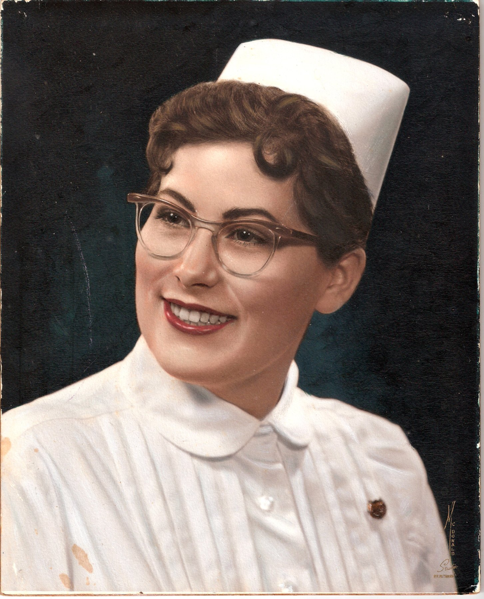
I started it all, I did. My cousin and Carolyn all became nurses. And now your mom. … It is a legacy.Delores Grantham Torrence, 2018
Time goes by so fast, so you need to enjoy yourself… make the most you can of your life, because it does go by so fast.
The full interview transcript and recording notes are in the research folder: Delores Grantham Torrence interview (edited).